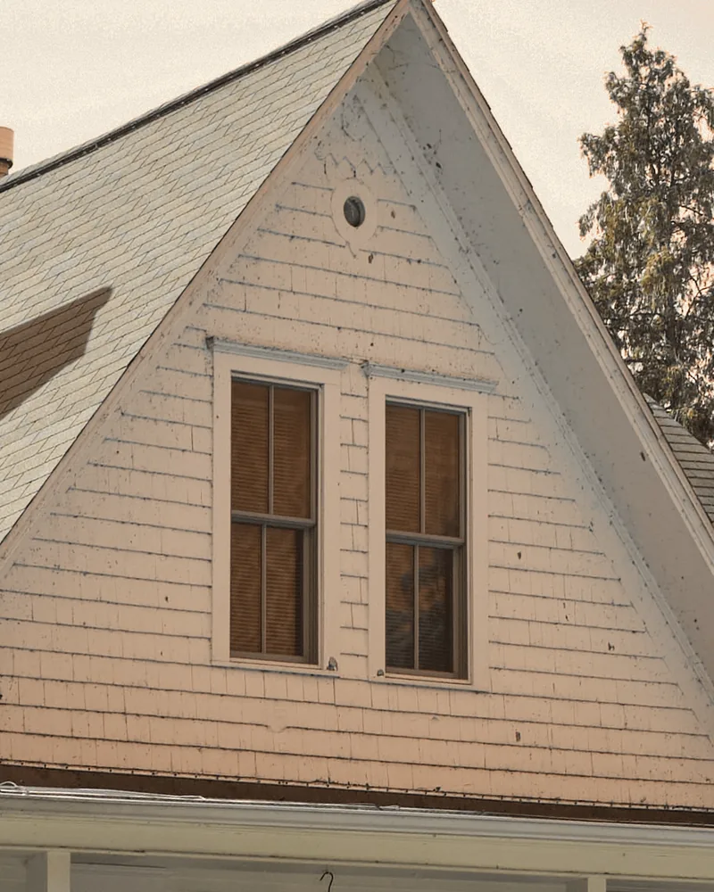
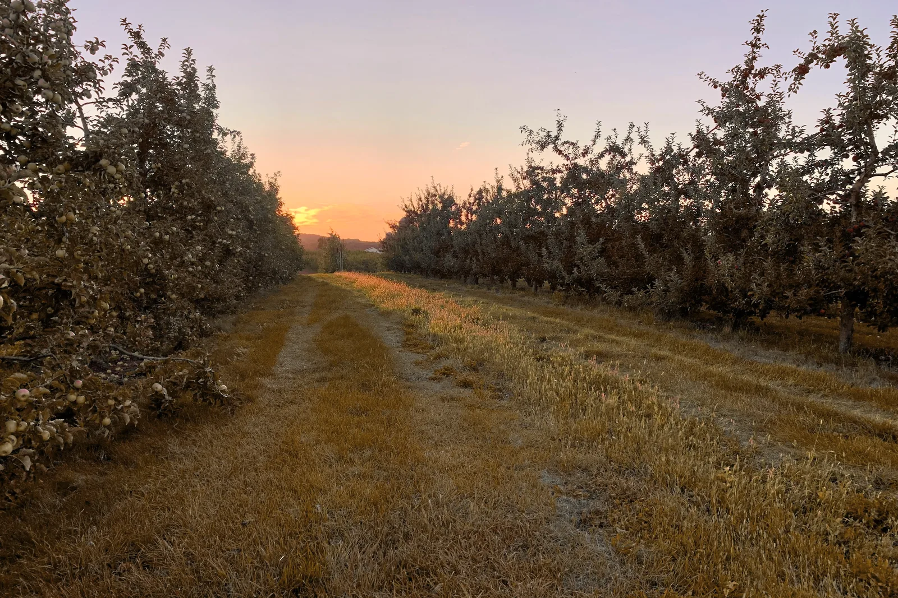
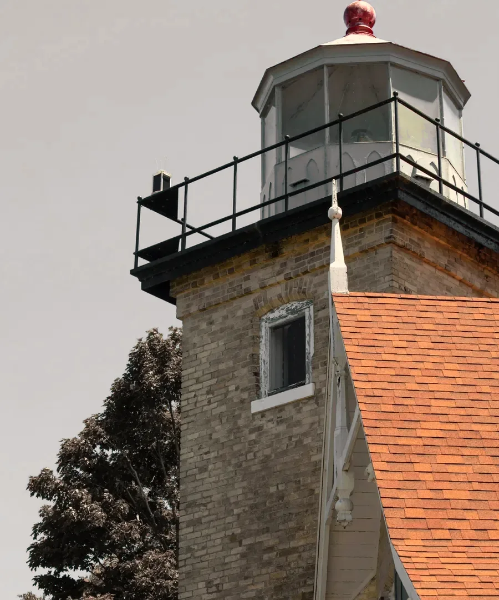
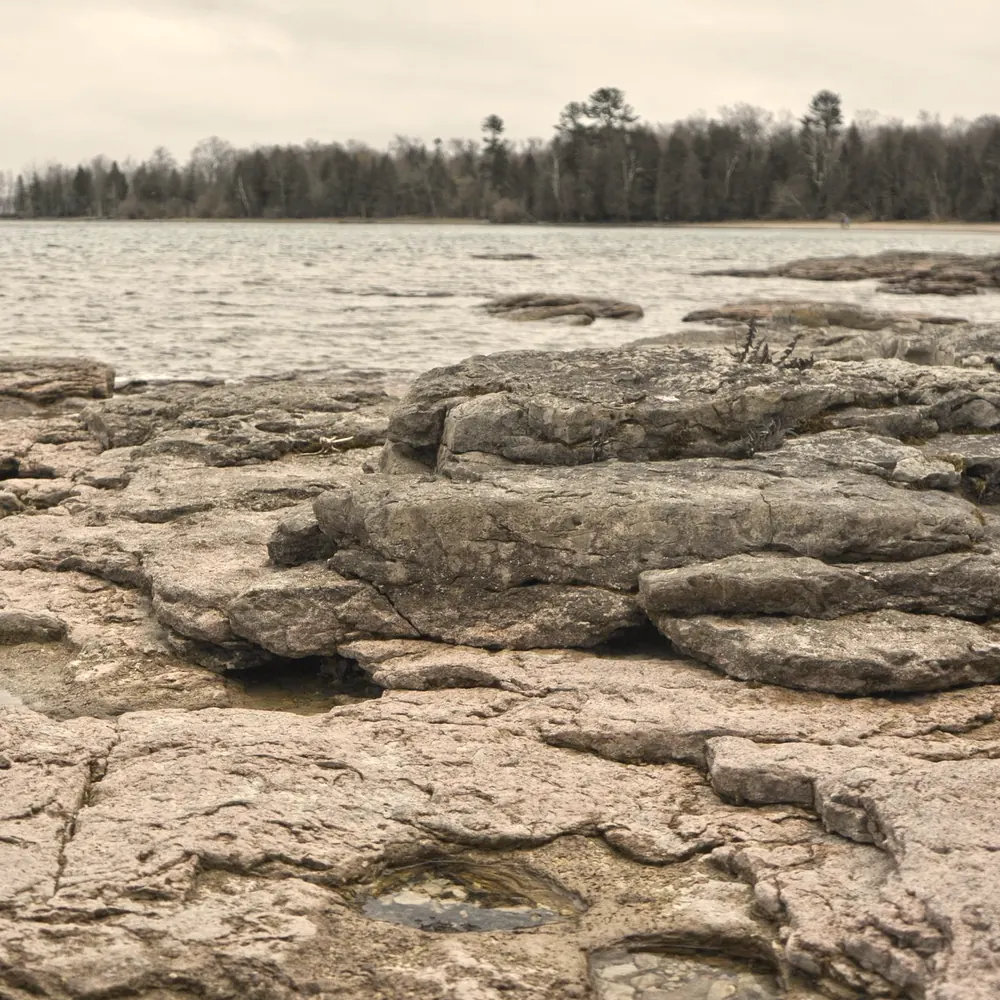
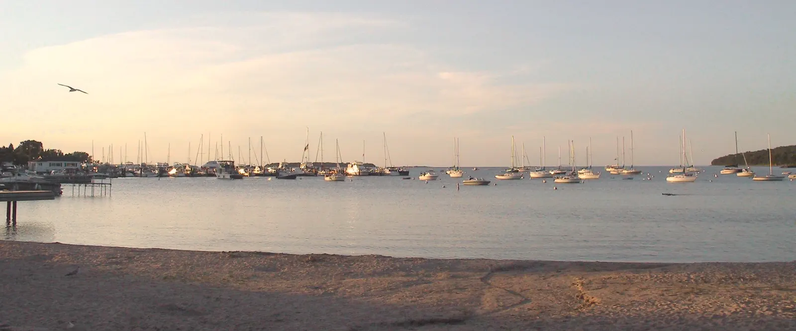

Bernie Kolar
Door County, Wisconsin · The Door Peninsula
Cottages, waterfront and year-round houses on the Door Peninsula, sold on the calendar of a place with one real season.
About Bernie
I learned this peninsula from the invoices.
Before I ever showed anyone a house, I did the books and the bookings for an orchard and a handful of seasonal cottages. Invoices, changeovers, the plumber in May, and the bills that turn up in February when nothing at all is coming in. It is not a glamorous way to learn a place. It is a thorough one.
People kept asking me what a place was actually like to own rather than to visit, and I kept having the answer, usually an unwelcome one. That was the better part of twenty years ago. It is still the question I am best at, and I have stopped apologizing for the answer.
Most of what sells here is on its best behavior for a few months of the year. So I ask people to make one return trip in the off-season, after the summer crew has gone home, and to treat it as an audit. I will tell you plainly which places change the most when you do.
I don’t take a listing I can’t photograph honestly, and I don’t pretend a cottage and a village house are the same sale. A cottage sells on water, access and what the last mile does in March. A house in town sells on the roof, the heat and the street. Mixing those up is how people come to own the wrong thing with great confidence.


The peninsula
Water on both sides
Lake Michigan runs down the east side and Green Bay down the west, and from the shore there is a horizon with no far side to it. The lake side gets the sunrise and the open swell. The bay side gets the sunset.
Two lighthouses are worth the drive: Cana Island near Baileys Harbor, reached by a causeway, and Eagle Bluff inside Peninsula State Park.

Limestone
The peninsula is a long spine of limestone, part of the Niagara Escarpment, and you can see the rock wherever the land meets the water. On the Green Bay side it stands up as bluffs. On the Lake Michigan side it slopes away into ledge and shelf rock at the waterline. Walk it once and the shape of the shoreline starts to make sense.

Orchards
Cherry and apple, in rows, are the county’s signature crop. They put on blossom in spring and throw long shadows by late season, and a back-road drive through them is worth the extra hour in either.
Villages and harbors
White clapboard, gable ends, working harbors and boathouses, from Sturgeon Bay up through Egg Harbor, Fish Creek and Ephraim, and across to Baileys Harbor. And the fish boil, a local tradition: whitefish and potatoes in a kettle over an open fire, finished with a boil-over worth standing back for.
Why work with Bernie
I have driven the road in March.
Access, plowing and what the last mile does off-season. The part that does not show in July.
I ask what a place takes to keep, not just what it takes to buy.
I ran the bookings and the bills on seasonal property, so the holding questions come up early instead of in year two.
One real season is a planning problem.
The season is short and everything out here runs to its calendar. I work backwards from that rather than hoping.

Buying and selling
Buying
- The water before the house
- We talk about the water, the access and the road before we talk about any particular place.
- See it properly
- We see places in person, and once in the off-season wherever that can be done.
- The list, early
- Shoreland, septic and well questions go on the list early and in front of the people whose job they are, and I stay on it through to close.
Selling
- What it actually is
- A cottage and a village house are two different sales. We start by being honest about which one you have.
- The honest season
- We photograph and list it in the season that shows it as it is.
- The follow-through
- I handle the inquiries, the showings and everything after them, including the buyers who are five hours away.
Things I won’t do
- I won’t rush a close into the shoulder season just because the calendar is tidy. If the place is better seen in May, we wait for May.
- I won’t sell you a place on a road I haven’t driven off-season. If I haven’t, I’ll say so and go and drive it.
- I won’t take a listing I can’t photograph honestly. If the only good picture of a place is one week a year, that is worth saying out loud before we list it.
- I won’t answer a shoreland, septic or well question I’m not qualified to answer. I’ll make sure it’s asked, early, of the person whose job it is.
- I won’t tell you a place is right for you when it isn’t. You will find out in year two anyway, and you will remember who sold it to you.
Talk before you drive up
If you’re coming up for a weekend to look at places, call me before you set off. It changes what the weekend is worth.